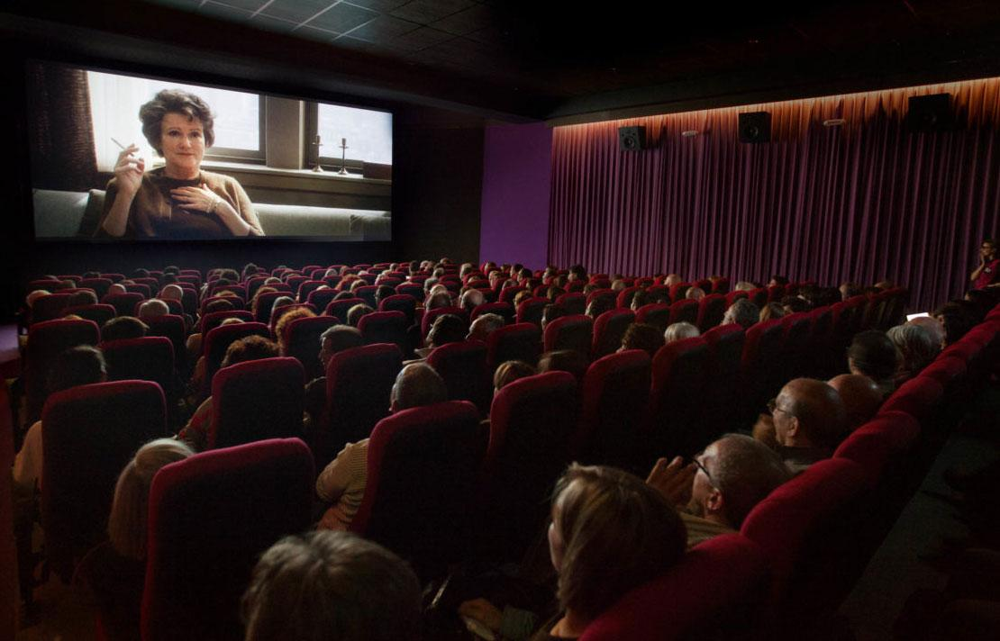

Historia
Un proyecto de ficción sonora que, a través de las conversaciones de dos personas, sumerge al
oyente en una narrativa asociada al contexto sociopolítico de Pertlaide de manera breve, dando
bastante importancia a charlas relacionadas con el séptimo arte.
Se presenta un conflicto en el que un nuevo régimen político, que hace parte de la forma de
gobierno del Partido del Elogio Artístico (PEA), liderado por el militar Amaroo Mooy, censura
toda práctica relacionada con las producciones audiovisuales, ya sea desde su creación, hasta su
visualización, emisión o conversación. El órgano administrativo que regula la aplicación de
dicho régimen, es conocido como el Ministerio de la Aprobación (MinApro), este ministerio cuenta
con unidades de infantería que se encargan de patrullar las calles y velar constantemente por la
censura del Cine. El régimen del PEA se tiene como objetivo principal censurar las producciones
audiovisuales, debido a que las considera un enemigo de la estabilidad sociopolítica del país,
al dar pie a distintas maneras de sesgar a los habitantes con las ideas que expone, y así
destruir su confianza en los gobiernos.
Los protagonistas son José Luis; escritor y Andrés; director de Cine, estos dos personajes son
de origen colombiano y, desde antes de que el régimen del PEA tomara lugar, se encontraban
diseñando un nuevo proyecto sonoro, dedicado a hablar de las producciones audiovisuales que más
disfrutan. La aparición de este régimen basado en la censura, provoca que realicen
modificaciones en la ubicación de su sede de producción, sin dejar de lado el proyecto, ya que,
a diferencia de gran parte de los habitantes, se oponen a la ideología y no tienen contemplado
desmantelar su proyecto.

Hechos relevantes que aportan al universo Transmedia
Mientras está en curso el gobierno encargado de censurar las producciones audiovisuales,
los protagonistas de la historia crean un pódcast dedicado a hablar de sus gustos
asociados al Cine y su relevancia en el mundo.
Medio principal de despliegue
Pódcast. Emisión en línea de los episodios asociados al medio principal de despliegue.

Representación gráfica de la historia en línea de tiempo
El proyecto sonoro se encuentra en el presente de la historia asociada.